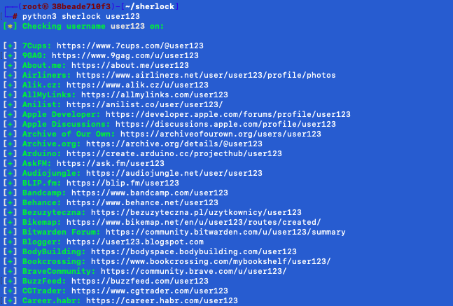

Sherlock est un puissant outil en ligne de commande fourni par le projet Sherlock,
qui peut être utilisé pour trouver des noms d'utilisateur sur de nombreux réseaux sociaux.
Il nécessite Python 3.6 ou supérieur et fonctionne sur macOS, Linux et Windows.
Sherlock est un projet python open-source disponible sur GitHub.
Vous pouvez saisir tous les noms d'utilisateur et il retournera toutes les URL de tous les comptes de médias sociaux
associés.
Pour ce tutoriel, nous utiliserons docker pour avoir une machine pour lancer l'outil Sherlock.
Télécharger le fichier suivant :
docker-compose.yml
Taper les commandes suivantes :
docker-compose up -dPour utiliser la machine avec l'outil Sherlock, tapez :
docker exec -it sherlock bashAccéder au répertoire de l'outil avec la commande suivante :
cd sherlockInstaller les dépendances requises avec la commande suivante :
python3 -m pip install -r requirements.txtExécuter la commande suivante pour trouver les comptes associés au nom d'utilisateur "user3 sur les réseaux sociaux :
python3 sherlock user123L'outil affichera les résultats pour chaque réseau social et indiquera si le nom d'utilisateur est disponible ou associé à un compte.
Le résultat apparait comme ceci :
